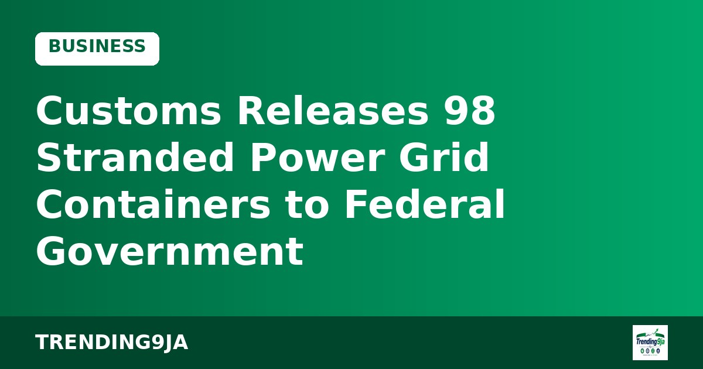

Fuel Prices Drop In Abuja As Filling Stations Adjust Rates Following NNPCL Cut
Several independent filling stations in Abuja have reduced petrol pump prices to N1,410 per litre following NNPCL's recent price cut, according to Daily Post.
Nigerian economy, markets, banking, oil and gas, companies and business news. (17 stories)
Several independent filling stations in Abuja have reduced petrol pump prices to N1,410 per litre following NNPCL's recent price cut, according to Daily Post.
Oyo State aims to reduce its reliance on oil by expanding its creative economy, arts, and cultural tourism for foreign exchange, according to Vanguard.
NNPC and SNEPCo have invited second-year Nigerian public university undergraduates with at least a 3.5 CGPA to apply for their 2026 scholarship award.
The Federal Government has launched the National Emergency Relief and Stabilisation Intervention (NERSI), providing ₦50,000 monthly to vulnerable Nigerians without an application process.

The Federal Government has recovered 98 containers of electricity transmission equipment that had been stuck at Lagos ports for up to 20 years, Daily Post reports.
Dubai has announced a fee of AED 5,774.50 alongside a four-step application procedure for Golden Visa investors seeking 10-year residency permits for parents.
Edo State Governor Monday Okpebholo has signed an agreement with China Express Airline and KDN Aero to establish a state-owned airline named Edo Air.

President Bola Tinubu has written to the Senate requesting approval for a $7.7bn foreign loan to help finance Nigeria's 2026 budget deficit.
Agricultural experts at a summit in Abuja have advised Nigerian farmers to switch to soil-based fertiliser application to boost crop yields and avoid wastage.
Nigeria and France are aiming to deepen cooperation in the oil and gas sector to drive economic growth and energy transition, according to Punch.
The World Bank-assisted HOPE Governance Programme has trained 388 Nigerian state officials to align education and health plans with 2027 budgets, according to Punch.

Nigeria has hosted the inaugural meeting of the $5 billion Africa Energy Bank, created by Afreximbank and APPO to finance energy projects across the continent.

President Bola Tinubu has defended Nigeria's borrowing strategy, stating that infrastructure investments will expand economic opportunities for future generations.

The National Directorate of Employment has launched a five-year plan to renovate 87 training facilities and boost vocational job creation across Nigeria.

ALTON has asked Nigerian state governments to remove right-of-way charges, stating they represent up to 60% of fibre optic setup costs.

The Federal Government has approved the East and West super grid project to expand Nigeria's power transmission capacity to 19,000MW, according to Vanguard.

Kuwait has set two strict conditions for foreign workers to join existing labor unions, while maintaining a total ban on expatriates forming new associations.
No stories from the past week here yet. Check back soon.
Nigeria's trending news, politics and entertainment, straight to your email.
By subscribing you agree to our Privacy Policy. Unsubscribe any time.